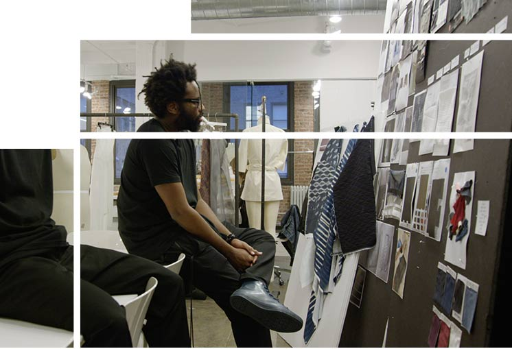

<!doctype html>
<html class="no-js parallels" lang="en"  id="top">


<!-- Mirrored from www.dare-greatly.com/experience-cadillac/xt5/parallels-by-design by HTTrack Website Copier/3.x [XR&CO'2014], Tue, 08 Dec 2015 19:02:33 GMT -->
<!-- Added by HTTrack --><meta http-equiv="content-type" content="text/html;charset=UTF-8" /><!-- /Added by HTTrack -->
<head>
  <link rel="icon" type="image/png" href="../images/favicon.png"/>
  <link rel="stylesheet" href="../css/app.min.css">
  <link rel="stylesheet" href="../css/user.css">
</head>


<body>
<header class="sticky-header full-width">
        <div class="large-6 medium-6 small-5 columns">        <div class="home">
          <a href="../index.html" id="home"><p>HOME</p></a>
          </div>
        </div>
        <div class="large-6 medium-6 small-8 columns text-right">
          <a href="http://www.dare-greatly.com/"> </a>
        </div>
</header>


<div class="row full-width">
  <div class="outer-wrap insp">
   <div class="video-wrap" id="video-wrap" style="width: 7608px; height: 1768px; overflow: hidden; position: relative; z-index: 10;">
     <video id="header-vid" style="top: -25%; width: 7608px; height: 2092.2px; visibility: visible; position: absolute; z-index: 1; max-width: 2000px; transform: translate3d(2804px, -230px, 0px);" preload="metadata" autoplay="" loop="" muted="" poster="../images/parallels/h_inspiration.jpg">
       <source src="../videos/inspiration.mp4" type="video/mp4">

            
            </video>
          <div class="header-text" style="left: 1791.5px; top: 155.5px; position: absolute;">
            <h4>PARALLEL ONE</h4>
            <h1>Inspiration</h1>
          </div>
        </div>
      </div>
    </div>
<div class="main-content">
    <div class="large-12 medium-12 small-12 columns">
     <div class="back-top">
      <p><a href="inspiration.html#top">TOP </p>
    </a>
  </div>
</div> 
<div class="inner-grid large-6 medium-6 small-10 small-centered text-justify large-collapse medium-collapse small-collapse columns">
  <div class="row full-break">
   <p>
    <i>Forward thinking</i> – At Cadillac, inspiration meets the driver. Four years of meticulous craft separate each vehicle from concept to production. For the Cadillac design teams, this means working ahead. Every detail must be justified—forecasting the trends of the future to provide longevity. One approach involves looking to the past. By studying changes in color over several years, the design team has identified an underlying trend of colors shifting to greener hues. Such insights surface in interior and exterior details and keep Cadillac at the forefront of innovation.
  </p>
</div>
</div>
<div class="inner-grid large-6 medium-6 small-10 small-centered text-center columns quote">
  <div class="row">
   <hr>

   <q><span>These findings take time to identify. It requires a</span>    <span> collection of ideas and thoughts—seeing everything </span><span>     at once and pulling trends out of the cluster.</span> </q>
   <p class="text-right">– Sharon Gauci, <i>Cadillac Global Color & Trim</i></p>
   <hr>
 </div>
</div>
<div class="inner-grid large-6 medium-6 small-10 small-centered text-justify columns">
  <div class="row">
   <p>
    Housed in Detroit, MI, The GM Archive Center offers another source of inspiration. A comprehensive collection of past Cadillac designs showcases decades of innovation. By examining what risks have paid off in the past, designers can calculate what risks will move the brand forward.
  </p>
  <p>
    But there’s a bigger picture; moving forward requires taking a look around. At Cadillac, inspiration is found under a global scope. Seven design studios from across the globe meet once a year at GM Headquarters and provide a comprehensive view of the world’s changing sensibilities. These discoveries span the realms of furniture design, interior design, architecture and fashion. Each offers a unique and advantageous perspective.

  </p>
  <p>
    Details found in a man’s watch can be interpreted into the interior of a future Cadillac vehicle. Ultimately, the concept must reflect every aspect of the driver’s lifestyle. 
  </p>
</div>
<div class="row">
 
         <!-- <div class="mask" id="insp">							
            
            <div id="mImg"></div>
          </div> -->
          <div class="text-right caption large-12 medium-12 small-12 small-centered">
            <p>Public School finds inspiration in the Dubai landscape</p>
            <p>GLOBAL PERSPECTIVE</p>
          </div>
        </div>
      </div>
      <div class="inner-grid large-6 medium-6 small-10 small-centered text-justify columns full-break">
        <p class="text-center"><i>An inspiring story</i></p>
        <p>For Public School designers Maxwell Osborne and Dao-Yi Chow, every collection is inspired by a theme—a narrative that ties each garment together. For the Pre-Fall Collection, Public School articulates the story of one girl taking leave of New York City and venturing out into the world. </p>
        <p>What does she leave behind, and what does she take with her? The idea of separation is mirrored in Public School’s story as they prepare for their first-ever international show in Dubai—departing from their New York sensibilities and drawing inspiration from the world around them. This intersection of the New World and the natural one transcends into new fabrics, prints and organic shapes.  </p>
        <p>Yet the ultimate revelation lies in the discovery of one’s self. For Public School, this new global perspective serves as a commentary on the qualities they’ll never abandon.  </p>
      </div>
      <div class="inner-grid large-6 medium-6 small-10 small-centered text-center columns quote">
        <div class="row">
         <hr>
         <q><span>The whole idea is that the girl never really leaves the</span>    <span> city, regardless of how far she goes. She can travel to  </span><span>     the moon and still have the city engrained within her</span> </q>
         <p class="text-right  extra-bottom-padding">– Dao-Yi Chow, <i>Public School</i></p>
         <hr>
       </div>
     </div>
     <div class="large-6 medium-6 small-10 small-centered text-justify columns">
      <span class="video-play-btn-overlay insp"></span>
      <iframe width="100%" height="315" id="para-vid" src="https://www.youtube.com/embed/tZ1Ca_xoYz0?rel=0&amp;wmode=transparent;&amp;wmode=transparent;&amp;controls=0&amp;showinfo=0" frameborder="0" allowfullscreen></iframe>      <div class="text-right caption large-12 medium-12 small-12 small-centered">
      <p>Every contour of the XT5 has been sculpted with the driver in mind</p>
      <p>SURFACE LANGUAGE</p>
    </div>
  </div>
  <div class="inner-grid large-6 medium-6 small-10 small-centered text-justify columns">
    <a href="http://www.cadillac.com/future-vehicles/xt5-crossover.html" class="learn-more" target="_blank">Learn more about the first-ever XT5 at Cadillac.com ></a>
    <p></p>
  </div>
  <div class="large-6 medium-6 small-10 small-centered text-justify small-text-left columns">
   <span class="learn-more-black" href="#">Follow the conversation:</span> <a href="https://twitter.com/search?q=%23XT5&amp;src=typd" class="learn-more" target="_blank">#XT5</a> <a href="https://twitter.com/search?q=%23PARALLELSBYDESIGN&amp;src=typd" target="_blank" class="learn-more">#ParallelsByDesign</a>
 </div>
 <div class="large-6 medium-6 small-10 small-centered text-justify small-text-left columns share-div">

   <div class="share-module-holder">
    <div class="share-module">
     <div class="social-icons-container">
      <div class="social-icons">
       <span class="share-text">Share:</span>
       <a href="#" data-share-facebook data-val="facebook" data-share-url="http://www.dare-greatly.com/experience-cadillac/xt5/parallels-by-design/inspiration?socid=fb_DareGreatly">
        <i class="fa fa-facebook"></i>
      </a>
      <a href="#" data-share-twitter data-val="twitter" data-share-text="Cadillac and @PublicSchoolNYC find inspiration in the world around them. Look inside: http://bit.ly/1NZKYCR #ParallelsByDesign">
        <i class="fa fa-twitter"></i>
      </a>
      <a href="#" data-share-google-plus data-val="googleplus" data-share-url="http://www.dare-greatly.com/experience-cadillac/xt5/parallels-by-design/inspiration?socid=gplus_DareGreatly">
        <i class="fa fa-google-plus"></i>
      </a>
      <a href="#" data-share-linkedin data-val="linkedin" data-share-text="Learn how Cadillac and New York fashion house Public School draw inspiration from the world around them. #ParallelsByDesign" data-share-url="http://www.dare-greatly.com/experience-cadillac/xt5/parallels-by-design/inspiration?socid=linkedin_DareGreatly" data-share-title="Cadillac x Public School">
        <i class="fa fa-linkedin-square"></i>
      </a>
      <a data-val="email" href="mailto:?subject=Explore%20the%20Cadillac%20x%20Public%20School%20Partnership&body=Learn%20how%20Cadillac%20and%20New%20York%20fashion%20house%20Public%20School%20draw%20inspiration%20from%20the%20world%20around%20them.%20Read%20here%3A%20http%3A%2F%2Fbit.ly%2F1GTmTOm" onclick="javascript:$(document).trigger('social-share','email');" target="_blank">
       <i class="fa fa-envelope-o"></i>
     </a>
   </div>
 </div>
</div>
</div>
</div>
</div>
<div class="inner-grid large-12">
 <hr>
</div>
<div class="inner-grid large-6 medium-6 small-12 small-centered small-only-text-center columns  prev-next">
 <div class="row large-collapse">
  <a href="../parallels-by-design.html"  class="columns large-4 medium-6 small-6 previous">
   <div>
    <span>REWIND TIME</span><br/>
    <p>Brief</p>
  </div>
</a>
<a href="exploration.html"  class="columns large-4 medium-6 small-6 large-only-text-right medium-text-right next">
 <div>
  <span>GO BOLDLY</span><br/>
  <p>Values</p>
</div>
</a>
</div>
</div>
</div>

<div class="large-12 medium-12 small-12 sticky-footer  full-width">
	<div class="row">
		<ul id="footer-navigation" class="large-7 medium-8 small-12 small-centered">
       <li>
        <a href="../index.html">00 <span>Home</span></a>
      </li>
      <li>
        <a href="inspiration.html">01 <span>Introudction</span></a>
      </li>
      <li>
        <a href="exploration.html">02 <span>Values</span></a>
      </li>
      <li>
        <a href="form.html">03 <span>Visuals</span></a>
      </li>
      <li>
        <a href="color.html">04 <span>Visability</span></a>
      </li>
      <li>
        <a href="material.html">05 <span>Voice</span></a>
      </li>
      <li>
        <a href="construction.html">06 <span>Virtual</span></a>
      </li>
      <li>
        <a href="signature.html">07 <span>GoodByes</span></a>
      </li>


		</ul>

	</div>
</div>
<footer class="full-width">
	<div class="inner-grid row large-12 medium-6 small-12 small-centered columns footer-holder">
		<div class="row">
			<div class="large-6 medium-12 small-12 small-centered columns">
				<div class="row large-collapse">
					<div class="large-7 large-push-5 medium-12 medium-push-12 small-12 social-icons-container columns small-only-text-center medium-only-text-center text-right">
						<div class="social-icons-container">
							<div class="social-icons">
							<span class="footer-sub">Follow Us: &nbsp;&nbsp;&nbsp;</span>
							<br class="show-for-small-only">
								<a href="https://www.facebook.com/cadillac" target="_blank" title="Follow us on Facebook"> <i class="fa fa-facebook"></i> </a>
								<a href="https://twitter.com/Cadillac" target="_blank" title="Follow us on Twitter"> <i class="fa fa-twitter"></i> </a>
								<a href="https://plus.google.com/+Cadillac" target="_blank" title="Follow us on Google+"> <i class="fa fa-google-plus"></i> </a>
								<a href="https://www.youtube.com/user/cadillac" target="_blank" title="Follow us on YouTube"><i class="fa fa-youtube"></i></a>
								<a href="https://instagram.com/cadillac/?hl=en" title="Follow us on Instagram" target="_blank"><i class="fa fa-instagram"></i></a>
								<a href="http://cadillac.tumblr.com/" target="_blank" title="Follow us on Tumblr"><i class="fa fa-tumblr"></i></a>
								<a href="https://www.linkedin.com/company/cadillac?trk=biz-brand-tree-co-name" target="_blank" title="Follow us on Linkedin"> <i class="fa fa-linkedin"></i> </a>

							</div>
						</div>
					</div>
					<hr class="hide-for-large-up">
					<div class="large-5 large-pull-7 medium-12 medium-pull-12 small-12 columns show-for-large-up dg small-only-text-center medium-only-text-center">
					<h4>GO BOLDLY</h4>
					<span class="footer-sub">Discover More at <a href="http://cadillac.com/" target="_blank" class="gold-link" id="home-cadillac">CADILLAC.COM</a></span>
					</div>

					<div class="large-6 large-pull-6 medium-12 medium-pull-12 small-12 columns hide-for-large-up">
						<a class="footer-link large-6 medium-12 small-12 columns medium-text-center large-text-left" id="privacy" href="http://www.gm.com/privacy/" target="_blank">Privacy Policy</a>
						<a class="footer-link large-6 medium-12 small-12 columns medium-text-center large-text-left" id="terms" href="http://www.gm.com/copyright-trademark" target="_blank">Terms of Use</a>
					</div>

				</div>
			</div>
		</div>

		<hr>
		<div class="row">
			<div class="inner-grid large-6 medium-12 small-12 large-centered small-centered medium-text-center columns">
				<div class="row large-collapse">
					<div class="columns large-6 small-only-text-center medium-text-center large-text-right hide-for-large-up">
						<p class="footer-legal one">
							Discover More at <a href="http://cadillac.com/" target="_blank" class="gold-link" id="home-cadillac">CADILLAC.COM</a>
						</p>
					</div>
					<div class="columns large-6 medium-text-center large-text-left">
						<p class="footer-legal two">
							Cadillac Worldwide &copy; General Motors
						</p>
					</div>
				
					<div class="columns large-6 small-only-text-center medium-text-center large-text-right show-for-large-up">
						<a class="footer-link large-6 medium-12 small-12 columns medium-text-center large-text-right" id="privacy" href="http://www.gm.com/privacy/" target="_blank">Privacy Policy</a>
						<a class="footer-link large-6 medium-12 small-12 columns medium-text-center large-text-right" id="terms" href="http://www.gm.com/copyright-trademark" target="_blank">Terms of Use</a>
					</div>
				</div>
			</div>
		</div>
	</div>
</footer>

</html>